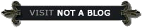

CURRENT GRRM BLOG POSTS
Six Days to Joe
Six days to go. Six days to Joe. Leaphorn, that is. It is June 6 as I type this. Next weekend, JUNE 12, will see the debut of DARK WINDS on AMC and AMC+. Yes, it has “Winds” in the… Read more >>
Stonemaiden I Back
There’s a brand new treat for Wild Cards fans over at Tor.com. “Hearts of Stone” is a terrific new novelette from Emma Newman. It marks the return of Stonemaiden, the Cornish ace first introduced in KNAVES OVER QUEENS. That was…… Read more >>
Here Come The Dragons
Are those dragons I see? Yes indeed. It’s May, which means the August 21 premiere of HOUSE OF THE DRAGON is only a few months away. And HBO has just released a new trailer, to give you another taste of… Read more >>
The Winds of June
The Dark Winds will start blowing in June. June 12, to be precise. That’s the day that DARK WINDS, a new series based on the classic bestselling Navajo detective novels by Tony Hillerman, will premiere on AMC and AMC+. I… Read more >>
The Dragons Are Coming..
A… they’re on the wing, and will be arriving in August. Details here: https://variety.com/2022/tv/news/game-of-thrones-house-of-the-dragon- premiere-date-1235215983/ Read more >>
THE RISE OF THE DRAGON
We’re so excited to announce The Rise of The Dragon, a lavish visual history of House Targaryen – the iconic family at the heart of HBO’s Game of Thrones prequel series, House of the Dragon – featuring over 180 all-new… Read more >>
Dealers Take Two
Kings and deuces may not be as iconic… or ominous… a poker hand as aces and eights, but it’s not a bad hand to be dealt… and Tor will be dealing those cards to all the Wild Cards fans out…Read more >>
